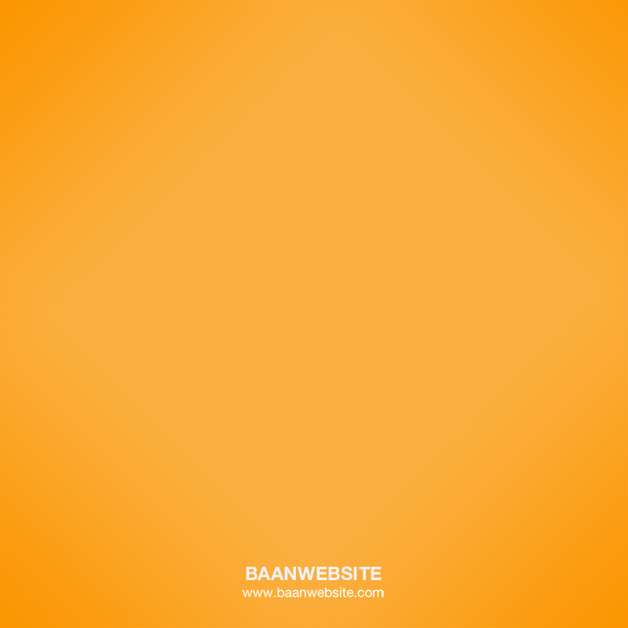

<ion-view title="{{nameTitle}}">
 

    <ion-nav-buttons >
        <button class="button ion-arrow-left-c button-clear button-positive" nav-direction="back"  ng-click="goBack()">Back</button>
    </ion-nav-buttons>

    <ion-content overflow-scroll="true" padding="true" class="has-header">


        <form class="list" ng-submit="sendPost(timePiker)" >
            <h3>จองห้องประชุม</h3>
            <div class="list">

              <h4>วันที่จอง :</h4>
              <ionic-datepicker input-obj="datepickerObject">
                <button type="button" class="button button-block button-calm"> {{$parent.inputDate | date:datepickerObject.dateFormat}}</button>
              </ionic-datepicker>


              <h4>เวลาที่เริ่ม :</h4>
              <ionic-timepicker input-obj="timePickerObject">
                <button type="button" class="button button-block button-calm overflowShow">
                  <standard-time-no-meridian
                   etime='timePickerObject.inputEpochTime' class="ng-binding">
                   </standard-time-no-meridian>
                </button>
              </ionic-timepicker>

                 <h4>เวลาที่เสร็จ:</h4>
                <ionic-timepicker input-obj="timePickerObjectEnd">
                <button  type="button" class="button button-block button-calm overflowShow">
                  <standard-time-no-meridian
                   etime='timePickerObjectEnd.inputEpochTime' class="ng-binding">
                   </standard-time-no-meridian>
                </button>
               </ionic-timepicker>
          

              <span class="input-label">รายละเอียด</span>
               <label class="item item-input">
                
                <textarea placeholder="รายละเอียด"  ng-model="$parent.timePiker.title" ></textarea>
              </label>
     
               <!-- <span class="input-label">รายละเอียด</span>
               <label class="item item-">
                  <a href="" class="avtra-icon"></a>
                  <a href="" class="avtra-icon" ng-click="member-dialog"><i class="icon ion-ios-plus-outline"></i></a>
              </label> -->

              
            </div>

            <div class="red">
                    <span ng-show="errorDate">{{errorDate}} <br></span>
                    <span ng-show="errorStart">{{errorStart}}<br></span>
                    <span ng-show="errorEnd">{{errorEnd}}<br></span>
                     <span ng-show="errorTitle">{{errorTitle}}<br></span>
            </div>

           <input type="submit" value="บันทึก" class="button button-positive  button-block"/>

        </form>
        

    </ion-content>
</ion-view>